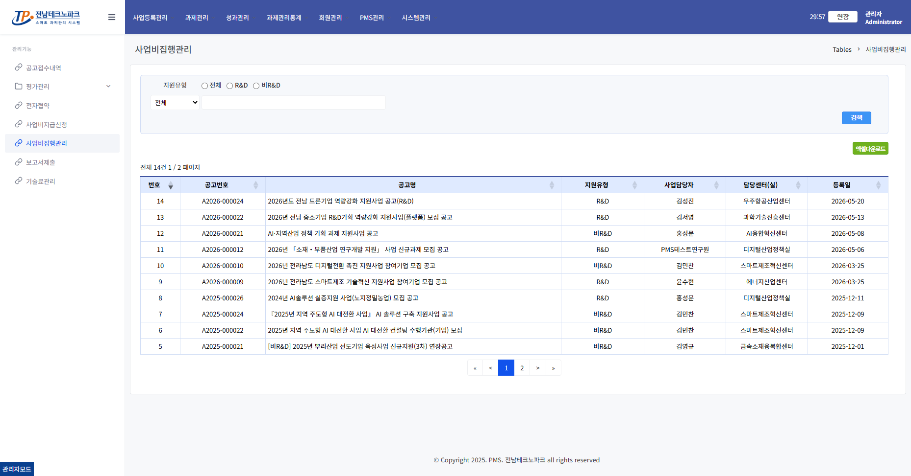
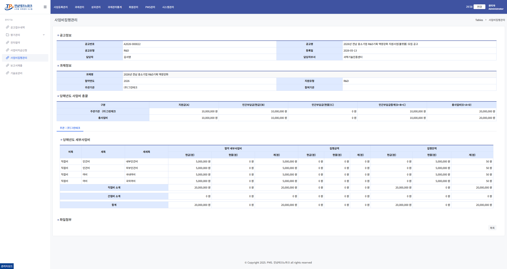

사업비 집행 확인 관리자
1. 사업비집행관리 공고 목록 진입
왼쪽 메뉴 「과제관리」 → 「사업비집행관리」 클릭 → 해당 공고 행 클릭

2. 사업비 집행관리 상세 확인
기업이 등록한 집행 내역을 항목별로 검토하고 이상 없을 경우 「확인」 처리합니다.

💡 안내
집행 확인 완료 후 보고서 제출 요청 단계로 진행합니다.
왼쪽 메뉴 「과제관리」 → 「사업비집행관리」 클릭 → 해당 공고 행 클릭

기업이 등록한 집행 내역을 항목별로 검토하고 이상 없을 경우 「확인」 처리합니다.
